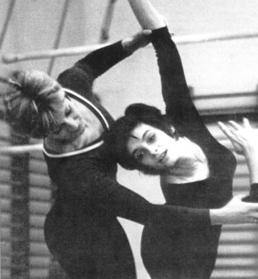

Monika Csaszar (HUN)
1972 Olympic Team Bronze Medalist

Medal Total
Olympic Games: 1 Bronze
World Championships: 1 Bronze
Monika was born on November 17, 1954, in Budapest. She married Olympic pentathlete Andras Balczo in 1975. They have twelve children.
Competition Results
1967
Budapest Jr. Championships: 5th AA
Hungarian Jr. Championships: 5th AA
Pioneer Summer Olympics: 3rd AA, 1st B, 2nd FX
1970
Jr. YUG-HUN Dual Meet: 1st Team, 5th AA
1972
Hungarian Championships: 6th AA
Intl. Championships of Romania: 4th AA
ITA-HUN Dual Meet:
1st Team, 5th AA
NED-HUN Dual Meet: 1st Team, 6th AA
1971
CSSR-HUN Dual Meet: 2nd Team, 5th AA
ROM-HUN Dual Meet: 4th AA
Intl. Champs. of Italy: 2nd AA
Jr. Friendship Tournament (Druzhba): 3rd Team, 5th AA, 2nd B, 3rd FX, 4th
UB
1972
Chunichi Cup: 8th AA
Hungarian Championships: 6th AA
HUN-ROM Dual Meet: 1st Team, 5th AA
International Championships of Romania: 4th AA
Olympic Games: 3rd Team, 14th AA, 4th B
Tokyo Cup: 4th AA
1973
Chunichi Cup: 12th AA
European Championships: 7th AA, 4th UB, 4th B
Hungarian International: 2nd AA, 1st FX, 3rd UB, 3rd B
Hungarian Championships: 2nd AA
USA-HUN Dual Meet: 1st Team, 4th AA
1974
Antibes International: 7th AA
Hungarian Championships: 1st AA
Hungarian Masters Championships: 2nd AA
HUN-CAN Dual Meet: 1st Team, 1st AA
Milk Meet: 2nd AA
NED-HUN Dual Meet: 1st Team, 1st AA
ROM-HUN Dual Meet: 1st Team, 2nd AA
World Championships: 3rd Team, 22nd AA
1975
HUN Championships: 3rd AA
This page was created on January 19, 2015 and was last updated on March 24, 2020.
© Gymn Forum